1. महत्व
इस पूजा का मुख्य संदेश सत्य पर चलना, ईश्वर के प्रति आभार प्रकट करना और सामाजिक एकता बनाए रखना है:
- सत्य व्रत की महिमा: स्कंद पुराण के अनुसार, यह पूजा सिखाती है कि संसार में 'सत्य' ही सबसे बड़ी शक्ति है। अपने वचनों पर टिके रहना और सच्चाई का मार्ग अपनाना मनुष्य को हर संकट से बचाता है।
- संकटों का नाश और मनोकामना पूर्ति: पूजा के दौरान सुनी जाने वाली व्रतकथा में एक निर्धन ब्राह्मण, लकड़हारे और राजा की कहानियां हैं। ये कहानियां दर्शाती हैं कि सच्ची श्रद्धा से यह व्रत करने पर मनुष्य दरिद्रता, खोया हुआ धन और हर प्रकार के दुखों से मुक्ति पा लेता है।
- आभार प्रकट करने का माध्यम: यह पूजा केवल कुछ मांगने के लिए ही नहीं, बल्कि किसी भी मनोकामना के पूरा होने, जीवन में सुख-समृद्धि आने या सफलता मिलने पर भगवान के प्रति आभार (Thanksgiving) व्यक्त करने के लिए की जाती है।
- सामाजिक समरसता और कल्याण: शास्त्रों के अनुसार, इस पूजा का एक बड़ा सामाजिक महत्व है। इसमें समाज के हर वर्ग के लोगों को एक साथ बैठकर कथा सुनने और समान रूप से प्रसाद (शीरा/सपाद) ग्रहण करने का नियम है, जो आपसी भेदभाव को मिटाकर एकता को बढ़ावा देता है।
- कलियुग में सबसे सरल उपाय: ग्रंथ में उल्लेख है कि भगवान विष्णु ने देवर्षि नारद से कहा था कि कलियुग में सांसारिक कष्टों से मुक्ति, सुख-समृद्धि और अंत में मोक्ष पाने का यह सबसे सरल और फलदायी उपाय है।
2. यह पूजा कब की जाती है?
सत्यनारायण पूजा की सबसे बड़ी विशेषता इसकी सरलता और लचीलापन (Flexibility) है। इसके लिए किसी बहुत बड़े या जटिल तांत्रिक मुहूर्त की आवश्यकता नहीं होती है। इसे किसी भी दिन किया जा सकता है, लेकिन कुछ विशेष तिथियां अत्यधिक शुभ मानी गई हैं:
अत्यंत शुभ तिथियां (चंद्र कैलेंडर के अनुसार)
- पूर्णिमा (Full Moon Day): यह पूजा करने के लिए सबसे उत्तम और प्रभावी दिन माना जाता है। कई परिवार हर महीने की पूर्णिमा को यह व्रत नियम से करते हैं।
- संक्रांति: जिस दिन सूर्य एक राशि से दूसरी राशि में प्रवेश करते हैं (जैसे मकर संक्रांति)।
- एकादशी: महीने के दोनों पक्षों (कृष्ण और शुक्ल) की ग्यारहवीं तिथि को भी यह पूजा करना शुभ होता है।
विशेष पवित्र महीने
यूं तो यह पूजा साल भर की जा सकती है, लेकिन कार्तिक, वैशाख, श्रावण और चैत्र के महीनों में इस पूजा का फल कई गुना अधिक माना गया है।
जीवन के विशेष अवसर और शुभ कार्य
सकारात्मक ऊर्जा और भगवान का आशीर्वाद पाने के लिए लोग इन अवसरों पर विशेष रूप से यह पूजा रखते हैं:
- गृह प्रवेश: नए घर में प्रवेश करने या नई संपत्ति खरीदने पर।
- विवाह के उपरांत: शादी के तुरंत बाद सुखद दांपत्य जीवन की शुरुआत के लिए।
- नई शुरुआत: नया व्यापार शुरू करने, नौकरी लगने या बच्चे के जन्म की खुशी में।
- संकट टलने पर: किसी बड़ी बीमारी से ठीक होने या आर्थिक संकट से उबरने के बाद।
शास्त्रों के अनुसार, यह पूजा सांयकाल (सूर्यास्त के समय) करना सबसे अधिक फलदायी माना जाता है, जब गोधूलि वेला होती है।
3. पूजन पद्धति
पूजा करना सनातन धर्म का अभिन्न अंग है। ईश्वर द्वारा प्रदत्त इस अमूल्य जीवन के प्रति आभार व्यक्त करने के लिए हमारे शास्त्रों में दैनिक पूजा का विधान बताया गया है। यद्यपि पूजा करने के कई उद्देश्य हो सकते हैं, किंतु उनमें सर्वश्रेष्ठ और पवित्रतम उद्देश्य ईश्वर के प्रति अपना प्रेम व कृतज्ञता ज्ञापित करना है। पूजा की पद्धति पूर्णतः व्यक्ति की श्रद्धा पर निर्भर करती है, फिर भी शास्त्रों में पूजन के कुछ अनिवार्य अंग सुनिश्चित किए गए हैं, जिन्हें 'पंचोपचार', 'दशोपचार' और 'षोडशोपचार' पूजन कहा जाता है।
पूजन के मुख्य उपचार:
- पंचोपचार (पाँच उपचार): गंध, पुष्प, धूप, दीप और नैवेद्य।
- दशोपचार (दस उपचार): पाद्य, अर्घ्य, आचमन, स्नान, वस्त्र, गंध, पुष्प, धूप, दीप और नैवेद्य।
- षोडशोपचार (सोलह उपचार): आवाहन-आसन, पाद्य, अर्घ्य, आचमन, स्नान, वस्त्र, आभूषण, गंध, पुष्प, धूप, दीप, नैवेद्य, ताम्बुल, स्तवपाठ, तर्पण और नमस्कार।
विशेष: पूजन की पूर्णता (सांगता सिद्धि) के लिए अंत में दक्षिणा अवश्य अर्पित करनी चाहिए।
4. पूजा सामग्री
नीचे दी गई सूची शुद्धि, पूजा स्थल, व्रत सामग्री, प्रसाद और हवन के लिए आवश्यक वस्तुओं को उचित श्रेणी में प्रस्तुत करती है।
पूजा स्थल / आधार सामग्री
कलश / शुद्धिकरण / जल
सुगंध / चंदन / रंग / तिलक सामग्री
पुष्प / पत्ते / प्रसादीय सामग्री
धूप / दीप / अग्नि / आरती
नैवेद्य / दूध-दही-घी / शर्करा
हवन / अग्नि अनुष्ठान
दक्षिणा / पूजा के आवश्यक प्रयोक्ता
5. तैयारी एवं संकल्प
गुरु वंदना
- गुरु ब्रम्हा गुरु विष्णू, गुरुः देवो महेश्वरा । गुरु शाक्षात परब्रम्हा तस्मै श्री गुरुवे नमः।।
- अखण्ड-मण्डलाकारम् व्याप्तम् येन चराचरम्। तत्पदं दर्शितम् येन तस्मै श्री गुरवे नमः॥
- मङ्गलम् भगवान विष्णुः मङ्गलम् गरुणध्वजः। मङ्गलम् पुण्डरी काक्षः मङ्गलाय तनो हरिः॥ ॐ नमोः नारायणाय नमः॥
पवित्रीकरण
- ॐ अपवित्रः पवित्रो वा सर्वावस्थां गतोऽपिवा । यः स्मरेत्पुण्डरीकाक्षं स बाह्यभ्यन्तरः शुचिः ॥
आचमन
ॐ केशवाय नमः | ॐ नारायणाय नमः | ॐ माधवाय नमः | ॐ हृषीकेशाय नमः |
प्राणायाम
- ॐ भूः ॐ भुवः ॐ स्वः ॐ महः ॐ जनः ॐ तपः ॐ सत्यम्। ॐ तत्सवितुर्वरेण्यं भर्गो देवस्य धीमहि धियो यो नः प्रचोदयात्। ॐ आपोज्योती रसोऽमृतं ब्रह्म भूर्भुवः स्वरोम्॥
करण्यास एवं अंग न्यास
- ॐ भूः अङ्गुष्ठाभ्यां नमः ॐ भुवः तर्जनीभ्यां नमः ॐ स्वः मध्यमाभ्यां नमः ॐ महः अनामिकाभ्यां नमः ॐ जनः कनिष्ठिकाभ्यां नमः ॐ तपः सत्यम् करतलकरपृष्ठाभ्यां नमः
- ॐ भूः हृदयाय नमः ॐ भुवः शिरसे स्वाहा ॐ स्वः शिखायै वषट् ॐ महः कवचाय हुम् ॐ जनः नेत्रत्रयाय वौषट् ॐ तपः सत्यम् अस्त्राय फट्
दिशा शुद्धि
- ॐ अपसर्पन्तु ते भूता ये भूता भुवि संश्रिताः । ये भूता विघ्नकर्तारः ते नश्यन्तु शिवाज्ञया ।
- अपकामन्तु भूतानि पिशाचाः सर्वतो दिशम्। सर्वेषामविरोधेन पूजाकर्म समारभे॥
पवित्री धारणम्
- पवित्रे स्थो वैष्णव्यौ सवितुर्वः प्रसव उत्पुनाम्यच्छिद्रेण पवित्रेण सूर्यस्य रश्मिभिः तस्य ते पवित्रपते पवित्र पूतस्य यत्कामः पुने तच्छकेयम्।
यज्ञोपवीत धारण
- ॐ यज्ञोपवीतं परमं पवित्रं प्रजापतेर्यत्सहजं पुरस्तात्। आयुष्यमग्र्यं प्रतिमुञ्च शुभ्रं यज्ञोपवीतं बलमस्तु तेजः॥
तिलक धारण
यजमान स्वयं:
- चन्दनं वन्द्यते नित्यं पवित्रं पाप नाशनं। आपदं हरते नित्यं लक्ष्मीः वसतु सर्वदा ।।
यजमान द्वारा ब्राह्मण को:
- नमो ब्राह्मण देवाय गो ब्राह्मण हिताय च | जगद्धिताय कृष्णाय गोविन्दाय नमो नम: ||
ब्राह्मण द्वारा यजमान को:
- ॐ स्वस्ति न इन्द्रो वृद्ध श्रवा: स्वस्ति न पूषा विस्ववेदा:। स्वस्ति नस्तार्क्ष्यो अरिष्टनेमि: स्वस्ति नो वृहस्पति दधातु।।
रक्षा सूत्र / मौली बन्धन
- ॐ येन बद्धो बली राजा दानवेन्द्रो महाबलः। तेन त्वामभिबध्नामि रक्षे मा चल मा चल॥
गठबन्धन
- ॐ तम्पत्नी भिरनुगच्छेम देवाः पुत्रैर्भ्रातृभिरुतवा हिरण्यैः । नाकङ्गृभ्णानाः सुकृतस्यलोके तृतीये पृष्ठेऽधिरोचने दिवः ॥
- ॐ गणाधिपं नमस्कृत्य उमालक्ष्मीसरस्वतीः । दम्पत्यो रक्षणार्थाय पटग्रन्थिं करोम्यहम् ॥
आसन शुद्धिकरण
- ॐ पृथ्वीति मन्त्रस्य मेरुपृष्ठ ऋषिः सुतलं छन्दः कूमों देवता, आसनपवित्रकरणे विनियोगः ||
- ऊँ पृथ्वीत्वया धृता लोकादेवि त्वं विष्णुना धृता | त्वं च धारय मां देवि पवित्र कुरु चासनम् ||
शिखा बंधन
- चिद्रूपिणि महामाये दिव्यतेजः समन्विते । तिष्ठ देवि शिखामध्ये तेजोवृद्धिं कुरुश्व: मे ।।
कर्म पात्र पूजन
- गंगे! च यमुने! चैव गोदावरी! सरस्वति! नर्मदे! सिंधु! कावेरि! जलेSस्मिन् सन्निधिं कुरु।।
दीपक पूजन
दीप प्रज्वलन मंत्र
- शुभं करोति कल्याणमारोग्यं धनसंपदा । शत्रुबुद्धिविनाशाय दीपज्योतिर्नमोऽस्तुते ॥
- दीपज्योतिः परब्रह्म दीपज्योतिर्जनार्दनः । दीपो हरतु मे पापं दीपज्योतिर्नमोऽस्तुते ॥
- भो दीप देव रूपस्त्वं कर्म साक्षी ह्यविघ्नकृत् | यावत् कर्म समाप्ति स्यात् तावत् त्वं सुस्थिरो भव ||
संकल्प
यजमान अपने दायें हाथ में कुश, पुष्प, अक्षत, द्रव्य आदि लेकर संकल्प करे –
ॐ विष्णुर्विष्णुर्विष्णुः श्री मद्भग्वतो महापुरुषस्य विष्णोराज्ञया प्रवर्त मानस्य ब्राह्मणोन्हि द्वितिय परार्धे श्री श्वेतवाराहकल्पे वैवश्वत मन्वन्तरे अष्टाविंशति तमे कलियुगे कलिप्रथम चरणे जम्बुद्वीपे भरतखण्डे आर्यावर्तैकदेशे [हैदराबाद भाग्यनगरे, [****] क्षेत्रे [*****] स्थिते [******] मासे [******] पक्षे [*******] तिथौ [****]*] वासरे [******] गोत्रोत्पन्नस्य [******] सपरिवारस्य श्रुति स्मृति पुराणोक्त फल प्राप्त्यर्थं मम सकुटुम्बस्य सपरिवारस्य सकल-दुरितोप-सर्गापच्छान्ति-पूर्वक, दीर्घायु शरीरायोग्य कामनया धन-धान्य-बल-पुष्टि-कीर्ति-यश लाभार्थं, सर्व ग्रह शांति, सकल-मनोरथ-सिद्ध्यर्थं, [विशेष संकल्प] यथाशक्ति गंध-पुष्प-धुप-दीप-यज्ञोपवीत वस्त्र-अपुंग नैवेद्या दिभी: पंच-देवता-पूजन [भगवन श्री सत्यनारायण पूजनं तत्कथा श्रवणं तत्पश्चात् हवनं] अहं करिष्ये
6. पूजा विधि
स्वस्तिवाचन मंत्र
यजमान हाथ में पुष्प लेकर गणेश अम्बिका का ध्यान करें।
- ॐ आनोभद्रा: क्रतवो यन्तु विस्वतो दब्धासो अपरीतास उद्भिद:।
- देवानो यथा सदमिद वृधे असन्नप्रायुवो रक्षितारो दिवे दिवे।।
- देवानां भद्रा सुमतिर्रिजुयताम देवानाग्वंग रातिरभि नो निवार्ताताम।
- देवानां ग्वंग सख्यमुपसेदिमा वयम देवान आयु: प्रतिरन्तु जीवसे।।
- तान पूर्वया निविदा हूमहे वयम भगं मित्र मदितिम दक्षमस्रिधम।
- अर्यमणं वरुण ग्वंग सोममस्विना सरस्वती न: सुभगा मयस्करत।।
- तन्नोवातो मयोभूवातु भेषजं तन्नमाता पृथिवी तत्पिता द्यौ:।
- तद्ग्रावान: सोमसुतो मयोभूवस्त दस्विना श्रुनुतं धिष्ण्या युवं।।
- तमीशानं जगतस्तस्थुखसपतिं धियंजिन्वमवसे हूमहे वयम।
- पूषा नो यथा वेद सामसद वृधे रक्षिता पायुरदब्ध: स्वस्तये।।
- ॐ स्वस्ति न इन्द्रो वृद्ध श्रवा: स्वस्ति न पूषा विस्ववेदा:।
- स्वस्ति नस्तार्क्ष्यो अरिष्टनेमि: स्वस्ति नो वृहस्पति दधातु।।
- पृषदश्वा मरुत: प्रिश्निमातर: शुभं यावानो विदथेषु जग्मय:।
- अग्निजिह्वा मनव: सूरचक्षसो विश्वे नो देवा अवसागमन्निह।।
- भद्रं कर्णेभि: शृणुयाम देवा भद्रं पश्येमाक्षभिर्यजत्राः।
- स्थिरैरङ्गैस्तुष्टुवा ग्वंग सस्तनू भिर्व्यशेमहि देवहितं यदायु:।।
- शतमिन्नु शरदो अन्ति देवा यत्रा नश्चक्रा जरसं तनूनाम्।
- पुत्रासो यत्र पितरो भवन्ति मानो मध्या रीरिषतायुर्गन्तो:।।
- अदितिर्द्यौरदितिरन्तरिक्ष्म दितिर्माता स पिता स पुत्र:। विश्वेदेवा अदिति: पञ्चजना अदितिर्जातमदितिर्जनित्वम्।।
- ॐ द्यौ: शान्ति रन्तरिक्ष् ग्वंग शान्ति: पृथिवी शान्ति राप: शान्ति रोषधय: शान्ति:। वनस्पतय: शान्तिर्विश्वे देवा: शान्तिर्ब्रह्म शान्ति: सर्व ग्वंग शान्ति: शान्तिरेव शान्ति: सामा शान्तिरेधि।।
- यतो यत: समीहसे ततो नो अभयं कुरु। शं न: कुरु प्रजाभ्यो भयं न: पशुभ्य:।। सुशान्तिर्भवतु
- श्री मन्महागणाधिपतये नमः। लक्ष्मीनारायणाभ्यां नम:।
- उमामहेश्वराभ्यां नम:। वाणीहिरण्यगर्भाभ्यां नं:। शचिपुरन्दराभ्यां नम:। इष्टदेवताभ्यो नम:। कुलदेवताभ्यो नम:। ग्रामदेवताभ्यो नम:। वास्तुदेवताभ्यो नम:। स्थानदेवताभ्यो नम:। सर्वेभ्यो देवेभ्यो नम:। सर्वेभ्यो ब्राह्मणेभ्यो नम:। ॐ सिद्धिबुद्धिसहिताय श्री मन्महागणाधिपतये नम:।
- सुमुखश्चैकदन्तश्च कपिलो गजकर्णकः। लम्बोदरश्च विकटोविघ्ननाशो विनायक:।।
- धूम्रकेतुर्गणाध्यक्षो भालचन्द्रो गजानन:। द्वद्शैतानि नामानि यः पठेच्छ्रिणुयादपी।।
- विद्यारंभे विवाहे चप्रवेशे निर्गमे तथा। संग्रामे संकटे चैव विघ्नस्तस्य न जायते।।
- शुक्लाम्बरधरं देवं शशिवर्णं चतुर्भुजम्। प्रसन्नवदनं ध्यायेत् सर्व्विघ्नोपशान्तये।।
- अभिप्सितार्थ सिद्ध्यर्थं पूजितो य: सुरासुरै:। सर्वविघ्नहरस्तस्मै गणाधिपतये नम:।।
- सर्वमङ्गलमाङ्गल्ये! शिवे! सर्वार्थसाधिके। शरण्ये त्र्यम्बिके! गौरी नारायणि नमोस्तुते।।
- सर्वदा सर्वकार्येषु नास्ति तेषाममङ्गलम्। येषां हृदयस्थो भगवान् मङ्गलायतनो हरि:।।
- तदेव लग्नं सुदिनं तदेव, ताराबलं चन्द्रबलं तदेव। विद्याबलं दैवबलं तदेव, लक्ष्मीपते तेन्घ्रियुगं स्मरामि।।
- लाभस्तेषां जयस्तेषां कुतस्तेषां पराजय:। येषामिन्दीवरश्यामो हृदयस्थो जनार्दन:।।
- यत्र योगेश्वर: कृष्णो यत्र पार्थो धनुर्धर:। तत्र श्रीर्विजयो भूति र्ध्रुवा नीतिर्मम।।
- अनन्यास्चिन्तयन्तो मां ये जना: पर्युपासते। तेषां नित्याभियुक्तानां योगक्षेमं वहाम्यहम्।।
- स्मृतेःसकल कल्याणं भाजनं यत्र जायते। पुरुषं तमजं नित्यं व्रजामि शरणं हरम्।।
- सर्वेष्वारंभ कार्येषु त्रय:स्त्री भुवनेश्वरा:। देवा दिशन्तु नः सिद्धिं ब्रह्मेशानजनार्दना:।।
- विश्वेशम् माधवं दुन्धिं दण्डपाणिं च भैरवम्। वन्दे कशी गुहां गंगा भवानीं मणिकर्णिकाम्।।
- वक्रतुण्ड् महाकाय सूर्य कोटि समप्रभ। निर्विघ्नं कुरु में देव सर्वकार्येषु सर्वदा।।
- ॐ गणांना त्वा गणपतिं हवामहे प्रियाणां त्वा प्रियपतिं हवामहे। निधिनां त्वा निधिपतिं हवामहे वसो मम आह्मजानि गर्भधमात्वमजासि गर्भधम्।।
ॐ श्री गणेशाम्बिकाभ्यां नम:।
कलश प्रार्थना मंत्र
कलशस्य मुखे विष्णुः कण्ठे रुद्रः समाश्रितः।
मूले त्वस्य स्थितो ब्रह्मा मध्ये मातृगणाः स्मृताः॥
कुक्षौ तु सागराः सर्वे सप्तद्वीपा वसुन्धरा।
ऋग्वेदोऽथ यजुर्वेदः सामवेदो ह्यथर्वणः॥
अंगैश्च सहिताः सर्वे कलशाम्बुसमाश्रिताः।
आयान्तु देवपूजार्थं दुरितक्षयकारकाः॥
कलश स्थापन विधि
भूमि का स्पर्श: ॐ भूरसि भूमिरस्यदितिरसि विश्वधाया विश्वस्य भुवनस्य धर्त्रीं। पृथिवीं यच्छ पृथिवीं दृ ग्वंग ह पृथिवीं मा हि ग्वंग सीः ॥
गोबर लेपन: मा नस्तोके तनये मा न आयुषि मा नो गोषु मा न अश्वेषु रीरिषः। वीरान् मा नो रुद्र भामितो वधीर्हविष्मन्तः सदामित् त्वा हवामहे॥
धान्य प्रक्षेप: ॐ धान्यमसि धिनुहि देवान् प्राणाय त्यो दानाय त्वा व्यानाय त्वा। दीर्घामनु प्रसितिमायुषे धां देवो वः सविता हिरण्यपाणिः प्रति गृभ्णात्वच्छिद्रेण पाणिना चक्षुषे त्वा महीनां पयोऽसि ।।
कलश स्थापना: ॐ आ जिघ्र कलशं मह्या त्वा विशन्त्विन्दव:। पुनरूर्जा नि वर्तस्व सा नः सहस्रं धुक्ष्वोरुधारा पयस्वती पुनर्मा विशतादयिः ॥
कलश में जल: ॐ वरुणस्योत्तम्भनमसि वरुणस्य स्काभसर्जनी स्थो वरुणस्य ऋतसदन्यसि वरुणस्य ऋतसदनमसि वरुणस्य ऋतसदनमा सीद ।।
कलश पर पञ्चपल्लव: ॐ अम्बे अम्बिके अम्बालिके न मा नयति कश्चन। ससस्त्यस्वकः सुभद्रिकाङ्काम्पीलवासिनीम्।।
कलश में दूब: ॐ काण्डात्काण्डात्प्ररोहन्ती परुषः परुषस्परि। एवा नो दूर्वे प्र तनु सहस्रेण शतेन च ॥
कलश में द्रव्य: ॐ हिरण्यगर्भः समवर्तताग्रे भूतस्य जातः पतिरेक आसीत्। स दाधार पृथिवीं द्यामुतेमां कस्मै देवाय हविषा विधेम ।।
कलश में सुपारी: ॐ याः फलिनीर्या अफला अपुष्पायाश्च पुष्पिणीः। बृहस्पतिप्रसूतास्ता नो मुञ्चन्त्व ग्वंग हसः ॥
कलश में नारियल: ॐ याः फलिनीर्या अफला अपुष्पा याश्च पुष्पिणीः। बृहस्पतिप्रसूतास्ता नो मुञ्चन्त्व हसः।।
दीप दर्शयामि मंत्र: ॐ अग्निर्ज्योतिर्ज्योतिरग्निः स्वाहा। ॐ सूर्यो ज्योतिर्ज्योति: सूर्य: स्वाहा। ॐ अग्निर्वर्चो ज्योतिर्वर्चः स्वाहा। ॐ सूर्यो वर्चो ज्योतिर वर्चः स्वाहा। ॐ ज्योति: सूर्य: सूर्यो ज्योति: स्वाहा।
प्राण प्रतिष्ठा — हाथ में अक्षत-पुष्प: ॐ मनो जूतिर्जुषतामाज्यस्य बृहस्पतिर्यज्ञमिमं तनोत्वरिष्टं यज्ञ समिमं दधातु। विश्वे देवास इह मादयन्तामो३म्प्रतिष्ठ।।
गणेश जी महाराज का ध्यान
खर्वं स्थूलतनुं गजेन्द्रवदनं लम्बोदरं सुन्दरं प्रस्यन्दन्मदगन्धलुब्धमधुपव्यालोलगण्डस्थलम्।
दन्ताघातविदारितारिरुधिरैः सिन्दूरशोभाकरं वन्दे शैलसुतासुतं गणपतिं सिद्धिप्रदं कामदम्॥
ॐ श्री गणेशाय नमः, ध्यानार्थे अक्षतपुष्पाणि समर्पयामि।
- अक्षत: ॐ भूर्भुवः श्वः ॐ श्री गणेशाय इहागच्छ इह तिष्ठ।
- जल: एतानि पाद्य-अर्घ्य-आचमनीय-स्नानीय-पुनराचमनीयानि ॐ श्री गणेशाय नमः।
- चन्दन: इदमनुलेपनम् ॐ श्री गणेशाय नमः।
- सिन्दूर: इदं सिन्दूरं समर्पयामि ॐ श्री गणेशाय नमः।
- दुर्वा: एतानि दूर्वादलानि ॐ श्री गणेशाय नमः।
- पुष्प: एतानि पुष्पाणि ॐ श्री गणेशाय नमः।
- जल: एतानि गंध-पुष्प-धूप-दीप-ताम्बूल-यथाभाग-नानाविधानि नैवेद्यानि ॐ श्री गणेशाय नमः।
- जल: इदमाचमनीयं ॐ श्री गणेशाय नमः।
- पुष्पाञ्जलि: एष पुष्पाञ्जलिः ॐ श्री गणेशाय नमः।
- प्रणाम: ॐ श्री गणेशाय पूजतोषी प्रणामं करोमि।
- ॐ गणाधिपाय नमः । ॐ उमापुत्राय नमः । ॐ विघ्ननाशनाय नमः । ॐ विनायकाय नमः । ॐ ईशपुत्राय नमः । ॐ सर्वसिद्धिप्रदाय नमः । ॐ एकदन्ताय नमः । ॐ इभवक्त्राय नमः । ॐ मूषकवाहनाय नमः । ॐ कुमारगुरवे नमः । ॐ गजाननाय नमः ॥
विघ्नेश्वराय वरदाय सुरप्रियाय लम्बोदराय सकलाय जगद्विताय।
नागाननाय श्रुतियज्ञविभूषिताय गौरीसुताय गणनाथ नमो नमस्ते॥
ॐ एकदन्ताय विद्महे वक्रतुण्डाय धीमहि। तन्नो दन्ती प्रचोदयात्॥
भगवान् सूर्य का ध्यान
रक्ताम्बुजासनमशेषगुणैकसिन्धुं भानुं समस्तजगतामधिपं भजामि।
पद्मद्वयाभयवरान् दधतं कराब्जै-र्माणिक्यमौलिमरुणांगरुचिं त्रिनेत्रम्॥
ॐ श्री सूर्याय नमः, ध्यानार्थे अक्षतपुष्पाणि समर्पयामि।
- अक्षत: ॐ भूर्भुवः श्वः ॐ श्री सूर्याय इहागच्छ इह तिष्ठ।
- जल: एतानि पाद्य-अर्घ्य-आचमनीय-स्नानीय-पुनराचमनीयानि ॐ श्री सूर्याय नमः।
- चन्दन: इदमनुलेपनम् ॐ श्री सूर्याय नमः।
- अक्षत: एते जौ तीला ॐ श्री सूर्याय नमः।
- पुष्प: एतानि पुष्पाणि ॐ श्री सूर्याय नमः।
- जल: एतानि गंध-पुष्प-धूप-दीप-ताम्बूल-यथाभाग-नानाविधानि नैवेद्यानि ॐ श्री सूर्याय नमः।
- जल: इदमाचमनीयं ॐ श्री सूर्याय नमः।
- पुष्पाञ्जलि: एष पुष्पाञ्जलिः ॐ श्री सूर्याय नमः।
- प्रणाम: ॐ श्री सूर्याय पूजतोषी प्रणामं करोमि।
ॐ जपाकुसुमसंकाशं काश्यपेयं महाद्युतिम्। तमोरिं सर्वपापघ्नं प्रणतोस्मि दिवाकरम्॥
ॐ भास्कराय विद्महे प्रभाकराय धीमहि। तन्नो सूर्यः प्रचोदयात्॥
भगवान् विष्णु का ध्यान
उद्यत्कोटिदिवाकराभमनिशं शंख गदां पंकजं चक्रं बिभ्रतमिन्दिरावसुमतीसंशोभिपार्श्वद्वयम्।
कोटीरांगदहारकुण्डलधरं पीताम्बरं कौस्तुभै- र्दीप्तं श्विधरं स्ववक्षसि लसच्छीवत्सचिह्रं भजे॥
ॐ श्री विष्णवे नमः, ध्यानार्थे अक्षतपुष्पाणि समर्पयामि।
- जौ तील: ॐ भूर्भुवः श्वः श्री भगवन विष्णो: इहागच्छ इह तिष्ठ।
- जल: एतानि पाद्य-अर्घ्य-आचमनीय-स्नानीय-पुनराचमनीयानि ॐ भगवते श्री विष्णवे नमः।
- चन्दन: इदमनुलेपनम् ॐ भगवते श्री विष्णवे नमः।
- जौ तील: एते यव ते तीला ॐ भगवते श्री विष्णवे नमः।
- तुलसी दल: एतानि तुलसि दलानि ॐ भगवते श्री विष्णवे नमः।
- पुष्प: एतानि पुष्पाणि ॐ भगवते श्री विष्णवे नमः।
- जल: एतानि गंध-पुष्प-धूप-दीप-ताम्बूल-यथाभाग-नानाविधानि नैवेद्यानि ॐ भगवते श्री विष्णवे नमः।
- जल: इदमाचमनीयं ॐ भगवते श्री विष्णवे नमः।
- पुष्पाञ्जलि: एष पुष्पाञ्जलिः ॐ भगवते श्री विष्णवे नमः। प्रणाम: श्री भगवन विष्णु पूजतोषी प्रणामं करोमि।
कृष्णाय वासुदेवाय हरये परमात्मने। प्रणतक्लेशनाशाय गोविन्दाय नमो नमः॥
ॐ नारायणाय विद्महे वासुदेवाय धीमहि। तन्नो विष्णुः प्रचोदयात्॥
भगवान् शिव का ध्यान
ध्यायेन्नित्यं महेशं रजतगिरिनिभं चारूचंद्रावतंसं रत्नाकल्पोज्ज्वलांग परशुमृगवराभीतिहस्तं प्रसन्नम्।
पद्मासीनं समन्तात् स्तुतममरगणैर्व्याघ्रकृत्तिं वसानं विश्वाद्यं विश्वबीजं निखिलभय हरं पंचवक्त्रं त्रिनेत्रम्।
ॐ नमः शिवाय, ध्यानार्थे अक्षतपुष्पाणि समर्पयामि।
- अक्षत: ॐ भूर्भुवः श्वः ॐ शिवाय इहागच्छ इह तिष्ठ।
- जल: एतानि पाद्य-अर्घ्य-आचमनीय-स्नानीय-पुनराचमनीयानि ॐ शिवाय नमः।
- चन्दन: इदमनुलेपनम् ॐ शिवाय नमः।
- अक्षत: एते जौ तीला ॐ शिवाय नमः।
- पुष्प: एतानि पुष्पाणि ॐ शिवाय नमः।
- बिल्वपत्र: एतानि बिल्वपत्राणि समर्पयामि ॐ शिवाय नमः।
- जल: एतानि गंध-पुष्प-धूप-दीप-ताम्बूल-यथाभाग-नानाविधानि नैवेद्यानि ॐ शिवाय नमः।
- जल: इदमाचमनीयं ॐ शिवाय नमः।
- पुष्पाञ्जलि: एष पुष्पाञ्जलिः ॐ शिवाय नमः। प्रणाम: ॐ शिवाय पूजतोषी प्रणामं करोमि।
नमः शम्भवाय च मयोभवाय च नमः शंकराय च मयस्कराय च।
नमः शिवाय च शिवतराय च॥
ॐ तत्पुरुषाय विद्महे महादेवाय धीमहि। तन्नो रुद्रः प्रचोदयात्॥
भगवती माँ श्री दुर्गा जी का ध्यान
सिंहस्था शशिशेखरा मरकतप्रख्यैश्चतुर्भिर्भुजैः शंख चक्रधनुः शरांश्च दधती नेत्रैस्त्रिभिः शोभिता।
आमुक्तांगदहारकंकणरणत्काञ्चीरणन्नूपुरा दुर्गा दुर्गतिहारिणी भवतु नो रत्नोल्लसत्कुण्डला॥
ॐ श्री दुर्गायै नमः, ध्यानार्थे अक्षतपुष्पाणि समर्पयामि।
- अक्षत: ॐ भूर्भुवः श्वः भगवती श्री दुर्गादेब्ये इहागच्छ इह तिष्ठ।
- जल: एतानि पाद्य-अर्घ्य-आचमनीय-स्नानीय-पुनराचमनीयानि ॐ भगवती श्री दुर्गादेब्ये नमः।
- चन्दन: इदमनुलेपनम् ॐ भगवती श्री दुर्गादेब्ये नमः।
- अक्षत: एते जौ तीला ॐ भगवती श्री दुर्गादेब्ये नमः।
- पुष्प: एतानि पुष्पाणि ॐ भगवती श्री दुर्गादेब्ये नमः।
- सिन्दूर: इदं सिन्दूरं समर्पयामि ॐ भगवती श्री दुर्गादेब्ये नमः।
- जल: एतानि गंध-पुष्प-धूप-दीप-ताम्बूल-यथाभाग-नानाविधानि नैवेद्यानि ॐ भगवती श्री दुर्गादेब्ये नमः।
- जल: इदमाचमनीयं ॐ भगवती श्री दुर्गादेब्ये नमः।
- पुष्पाञ्जलि: एष पुष्पाञ्जलिः ॐ भगवती श्री दुर्गादेब्ये नमः।
- प्रणाम: भगवती श्री दुर्गादेब्ये पूजतोषी प्रणामं करोमि।
सर्वमङ्गलमाङ्गल्ये शिवे सर्वार्थसाधिके। शरण्ये त्र्यम्बके गौरि नारायणि नमोऽस्तु ते॥
ॐ महादेव्यै च विद्महे दुर्गायै च धीमहि। तन्नो देवी प्रचोदयात्॥
नवग्रह पूजन
आदित्याय च सोमाय मङ्गलाय बुधाय च।
गुरुशुक्रशनिभ्यश्च राहवे केतवे नमः॥
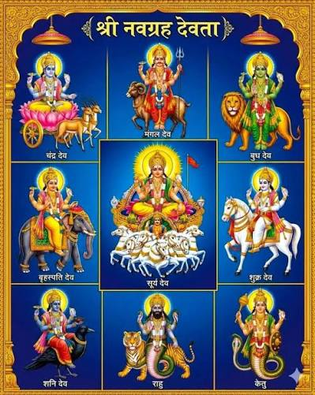
ॐ श्री नवग्रहेभ्यो नमः, ध्यानार्थे अक्षतपुष्पाणि समर्पयामि।
- अक्षत: ॐ भूर्भुवः श्वः श्री नवग्रहा: इहागच्छत इह तिष्ठत।
- जल: एतानि पाद्य-अर्घ्य-आचमनीय-स्नानीय-पुनराचमनीयानि ॐ श्री नवग्रहेभ्यो नमः।
- चन्दन: इदमनुलेपनम् ॐ श्री नवग्रहेभ्यो नमः।
- अक्षत: इदमक्षतम् ॐ श्री नवग्रहेभ्यो नमः।
- पुष्प: एतानि पुष्पाणि ॐ श्री नवग्रहेभ्यो नमः।
- जल: एतानि गंध-पुष्प-धूप-दीप-ताम्बूल-यथाभाग-नानाविधानि नैवेद्यानि ॐ श्री नवग्रहेभ्यो नमः।
- जल: इदमाचमनीयं ॐ श्री नवग्रहेभ्यो नमः।
- पुष्पाञ्जलि: एष पुष्पाञ्जलिः ॐ श्री नवग्रहेभ्यो नमः।
- प्रणाम: श्री नवग्रहा: पूजतोषी प्रणामं करोमि।
ब्रह्मा मुरारी त्रिपुरांतकारी भानु: शशि भूमि सुतो बुधश्च। गुरुश्च शुक्र शनि राहु केतव सर्वे ग्रहा शांति करा भवंतु।
नवग्रहाय विद्महे द्युतिधराय धीमहि। तन्नो ग्रहः प्रचोदयात्॥
सर्व देव देवी – कलश पूजन
- अक्षत: ॐ सर्व देव देवी इहागच्छतः इह तिष्ठतः। ॐ सर्व देवी देव्यै नमः।
- जल: एतानि पाद्य-अर्घ्य-आचमनीय-स्नानीय-पुनराचमनीयानि ॐ सर्व देवी देव्यै नमः।
- चन्दन: इदमनुलेपनम् ॐ सर्व देवी देव्यै नमः।
- सिन्दूर: इदं सिन्दूरं समर्पयामि ॐ सर्व देवी देव्यै नमः।
- अक्षत: इदमक्षतम् ॐ सर्व देवी देव्यै नमः।
- पुष्प: एतानि पुष्पाणि ॐ सर्व देवी देव्यै नमः।
- जल से नैवेद्य: एतानि गंध-पुष्प-धूप-दीप-ताम्बूल-यथाभाग-नानाविधानि नैवेद्यानि ॐ सर्व देवी देव्यै नमः।
- जल: इदमाचमनीयं ॐ सर्व देवी देव्यै नमः।
- पुष्पाञ्जलि: एष पुष्पाञ्जलिः ॐ सर्व देवी देव्यै नमः।
वसुदेवसुतं देवं कंसचाणूरमर्दनम् । देवकीपरमानन्दं कृष्णं वन्दे जगद्गुरुम् ॥
मनोजवं मारुततुल्यवेगं जितेन्द्रियं बुद्धिमतां वरिष्ठम् । वातात्मजं वानरयूथमुख्यं श्रीरामदूतं शरणं प्रपद्ये ॥
रामाय रामभद्राय रामचन्द्राय वेधसे । रघुनाथाय नाथाय सीतायाः पतये नमः ॥
पद्मासनस्थिते देवि परब्रह्मस्वरूपिणि । परमेशि जगन्मातर्महालक्ष्मि नमोऽस्तु ते ॥
जयन्ती मङ्गला काली भद्रकाली कपालिनी । दुर्गा क्षमा शिवा धात्री स्वाहा स्वधा नमोऽस्तु ते ॥
या कुन्देन्दुतुषारहारधवला या शुभ्रवस्त्रावृता या वीणावरदण्डमण्डितकरा या श्वेतपद्मासना ।
या ब्रह्माच्युतशङ्करप्रभृतिभिर्देवैः सदा वन्दिता सा मां पातु सरस्वती भगवती निःशेषजाड्यापहा ॥
ॐ सर्वभ्यो देवेभ्यो नमः। ॐ सर्वभ्यो देवीभ्यो नमः। मातृ-पितृ चरणकमलेभ्यो नमः। कुलदेवताभ्यो नमः।
षोडशोपचार सत्यनारायण पूजन
सत्यनारायण पूजा शालिग्राम पर करना उत्तम माना गया है। यदि शालिग्राम उपलब्ध न हो तो कुश के भगवान् बनाकर प्राण प्रतिष्ठा कर पूजन करना चाहिए।
- फूल लेकर ध्यान:
ॐ ध्यायेत सत्यं गुणातीतं गुणत्रय समन्वितम्।
लोकनाथं त्रिलिकेशं पीतांबरधरं हरिं॥
इन्दीवरदलश्यामं शङ्ख चक्र गदाधरं।
गोविदं गोकुलानन्दं जगतः पितरंगुरुं॥
इदं ध्यान पुष्पं भगवते श्री सत्यनारयणाय नम:। - आवाहन:
ॐ आगच्छ देव देवेश सत्यनारायण प्रभो। क्रियमानं मया पूजां गृहाण जगदीश्वरः॥
ॐ भूर्भुवः स्वः भगवन श्री सत्यनारायण प्रभो इहागच्छ इह तिष्ठ। मम पूजां गृहाण सुप्रसन्नो भव प्रसीद॥
ॐ दामोदर समागच्छ लक्ष्म्या सह जगत्पते।
इमां मया कृतां पूजां गृहाण सुरसत्तम॥ - पुष्प आसन:
ॐ नाना रत्न समायुक्तं कार्तस्वर विभूषितम्। आसनं देव देवेश गृहाण पुरुषोत्तम॥ - जल से पाद्य:
ॐ नारायण नमस्तेऽस्तु नरकार्णवतारक। पाद्यं गृहाण देवेश मम सौख्यं विवर्धय॥
इदं पाद्यं भगवते श्री सत्यनारयणाय नम:। - जल से अर्घ्य:
ॐ व्यक्ताव्यक्त स्वरूपाय हृषीकपतये नमः।
मया निवेदितो भक्त्या अर्घ्योऽयं प्रतिगृह्यताम्॥
इदं अर्घ्यं ॐ भगवते श्री सत्यनारयणाय नम:। - जल से आचमन:
ॐ मन्दाकिन्यां तु यद् वारि सर्वपापहरं शुभम्।
तदिदं कल्पितं देव सम्यगाचम्यतां त्वया॥
इदमाचमनीयं ॐ भगवते श्री सत्यनारयणाय नम:। - जल से स्नान:
ॐ गंगा च यमुने चैव नर्मदा च सरस्वती।
तीर्थानां पावनं तोयं स्नानार्थं प्रतिगृह्यताम्॥
इदं स्नानीयं जलं ॐ भगवते श्री सत्यनारयणाय नम:। - पञ्चामृत स्नान:
पञ्चामृतं मयानीतं पयोदधि घृतं मधु। शर्करा च समायुक्तं स्नानार्थं प्रतिगृह्यताम्॥
ॐ अनाथनाथ सर्वज्ञ गीर्वाण परिपूजित। स्नानं पञ्चामृतैर्देव गृहाण पुरुषोत्तम॥
इदं पञ्चामृत स्नानं ॐ भगवते श्री सत्यनारयणाय नम:। - शुद्ध जल से स्नान:
परमानन्दतोयाब्धौ निमग्नतब् मूत्तये।
साङ्गोपाङ्गमिदं स्नानं कल्पयामि प्रसीद मे॥
इदं शुद्धोदकं ॐ भगवते श्री सत्यनारयणाय नम:। - अंगप्रक्षालनम:
ॐ अंगप्रक्षालनार्थाय जगतां परमेश्वरः। वस्त्रं गृहाण देवेश प्रसीद गरुडध्वजः॥
इदं अंगप्रक्षालनम ॐ भगवते श्री सत्यनारयणाय नम:। - पीला वस्त्र:
ॐ पीताम्बरं शुभं देव सर्वकामार्थ सिद्धये। मयानिवेदितं भक्त्या गृहाण सुरसत्तम॥
इदं पीतवस्त्रं वृहस्पतिदैवतं ॐ भगवते श्री सत्यनारयणाय नम:। - यज्ञोपवीत:
ॐ दामोदर नमस्तेऽस्तु त्राहिमाम भवसागरात्। ब्रह्मसूत्रं सोत्तरीयं गृहाण सुरसत्तम॥
इमे यज्ञोपवीते ॐ भगवते श्री सत्यनारयणाय नम:। - एक आचमनी जल छोड़ दें:
इदं आचमनीयं ॐ भगवते श्री सत्यनारयणाय नम:। - श्री खण्ड चन्दन:
श्रीखण्डचन्दनं दिव्यं गन्धाढ्यं सुमनोहरम्। विलेपनं सुरश्रेष्ठ चन्दनं प्रतिगृह्यताम्॥
इदं श्रीखण्डचन्दनं ॐ भगवते श्री सत्यनारयणाय नम:। - जौ, तील:
ॐ तीला यवाः सुरश्रेष्ठाः कम्बूजाश्च सुशोभनाः।
वासुदेव जगन्नाथ प्रीत्यर्थं स्वीकरु प्रभो॥
एते यवतीला: ॐ भगवते श्री सत्यनारयणाय नम:। - पुष्प:
ॐ सुगन्धीनि सुपुष्पाणि देशकालोद्भवानि च।
मयानीतानि पूजार्थं प्रीत्या स्वीकुरु प्रभो॥
एतानि पुष्पाणि ॐ भगवते श्री सत्यनारयणाय नम:। - पुष्पमाला:
माल्यादीनि सुगन्धीनि मालत्यादीनि वै प्रभो। मयाहृतानि पुष्पाणि पूजार्थं प्रतिगृह्यताम्॥
ॐ नानापुष्प विचित्राढ्यां पुष्पमाला सुशोभनाम्।
प्रयच्छामि च देवेश गृहाण परमेश्वर॥
इदं पुष्पमाल्यम ॐ भगवते श्री सत्यनारयणाय नम:। - तुलसी दल:
ॐ तुलसी हेमरूपां च रत्नरूपां च मञ्जरीम्।
भवमोक्षप्रदां तुभ्यमर्चयामि हरिप्रियाम्॥
एतानि तुलसि दलानि ॐ भगवते श्री सत्यनारयणाय नम:। - दुर्वा:
एतानि दूर्वादलानि ॐ भगवते श्री सत्यनारयणाय नम:। - जल से आचमन:
ॐ कर्पूरवासितं तोयं मन्दाकिन्याः समाहृतम्।
आचम्यतां महाभाग दत्तं हि भक्तितः॥
इदं आचमनीयं जलं ॐ भगवते श्री सत्यनारयणाय नम:। - धूप:
ॐ वनस्पति रसो दिव्यो गन्धाढ्यः सुमनोहरः।
आघ्रेयः सर्वदेवानां धूपोऽयं प्रतिगृह्यताम्॥
एष धूप: ॐ भगवते श्री सत्यनारयणाय नम:। - दीप:
ॐ आज्यं च वर्तिसंयुक्तं वह्निना योजितं मया।
दीपं गृहाण देवेश त्रैलोक्यतिमिरापह॥
एष दीप: ॐ भगवते श्री सत्यनारयणाय नम:। - नैवेद्य:
ॐ नैवेद्यं गृह्यतां देव भक्तिं मे चाचलां कुरु। ईप्सितं च वरं देहि परत्र च परांगतिम्॥
एतानि नानाविध-नैवेद्यानि ॐ भगवते श्री सत्यनारयणाय नम:। - पृथकन्नानि (चौरठ):
ॐ कदली गुड संमिश्रमाम तण्डूल संयुतम्।
शर्करादि समायुक्तं नैवेद्यं प्रतिगृह्यताम्॥
एतानि पृथकन्नानि ॐ भगवते श्री सत्यनारयणाय नम:। - फल:
ॐ फलान्यमृतकल्पानि स्थापितानि पुरतस्तव।
तेन मे सफलावाप्तिर्भवेज्जन्मनि जन्मनि॥
एतानि नानाविध फलानि ॐ भगवते श्री सत्यनारयणाय नम:। - जल से आचमन:
ॐ सर्वपापहरं दिव्यं गाङ्गेयं निर्मलं जलम्। दत्तमाचमनीयं ते गृहाण पुरुषोत्तम॥
इदमाचमनीयम् जलं भगवते श्री सत्यनारायणाय नमः। - हस्तमुख प्रक्षालनाम:
ॐ मुखप्रक्षालनार्थाय हस्तप्रक्षालनाय च। वस्त्रं गृहाण देवेश प्रसीद जगदीश्वरः॥ - ताम्बूल:
ॐ पूगिफलं महद्दिव्यं नागवल्लीदलैर्युतम्।
कर्पूरादि समायुक्तं ताम्बूलं प्रतिगृह्यताम्॥
एतानि ताम्बूलानि ॐ भगवते श्री सत्यनारायणाय नमः। - द्रव्य दक्षिणा:
ॐ काञ्चन रजतोपेतं नानारत्नसमन्वितम्। भूषणार्थं च देवेश गृहाण जगतीपते॥
इदं भूषणार्थं द्रव्यं ॐ भगवते श्री सत्यनारायणाय नम:। - फूल लेकर प्रार्थना करें:
ॐ अमोघं पुण्डरीकाक्षं नृसिंहं दैत्यसूदनम्। हृषीकेशं जगन्नाथं वागीशं वरदायकम्॥
गुणत्रयं गुणातीतं गोविन्दं गरुडध्वजम्। जनार्दनं जनानन्दं जानकीवल्लभं जयम्॥
प्रणमामि सदा सत्य-नारायणमतः परम्। दूर्गमे विषमे घोरे शत्रुभिः परिपीडिते॥
विविधापत्सु दुष्टेषु तथानेष्वपि यद् भयम्।
नामान्येतानि संकीर्त्य ईप्सितं फलमाप्नुयात्॥
सत्यनारायणं देवं वन्देऽहं कामदं प्रभुम्।
लीलया च ततो विश्वं येन तस्मै नमो नम:॥
एष पुष्पाञ्जलिः ॐ साङ्ग्सायुध सवाहन सपरिवार भगवते श्री सत्यनारायणाय नम:॥
प्रार्थना
यन्मया भक्तियोगेन पत्रं पुष्पं फलं जलम्।
निवेदितं च नैवेद्यं तद्गृहाणानुकम्पया॥
मंत्रहीनं क्रियाहीनं भक्तिहीनं जनार्दन।
यत् पूजितं मया देव परिपूर्णं तदस्तु मे॥
रूपं देहि जयं देहि सौभाग्यम् परमां श्रियम्।
पुत्रं विद्यां धनं देहि सर्वाणि कामांश्च देहि मे॥
शंख घंटी एवं कथा की पुस्तक की पूजा
आवाहन, पाद्य, आचमन, अर्घ्य, चन्दन, पुष्प, प्रणाम।
7. कथा, मंत्र एवं आरती
कथा प्रारम्भ
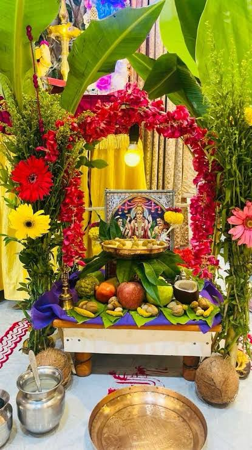
अध्याय १–७
- प्रत्येक अध्याय के अंत में शंख एवं घंटी तीन बार बजाना है।
- ॐ नमो भगवते वासुदेवाय — 5 बार।
- ॐ कृष्णाय वासुदेवाय हरये परमात्मने। प्रणतक्लेशनाशाय गोविन्दाय नमो नमः॥ — 1 बार।
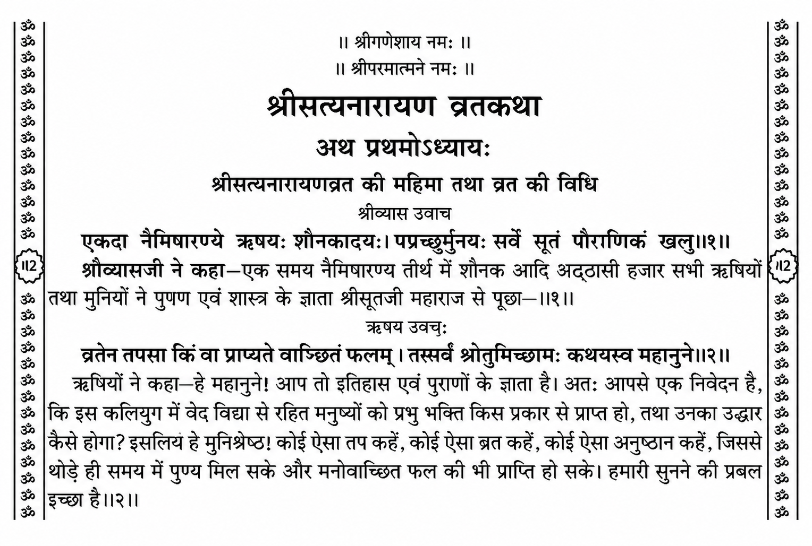
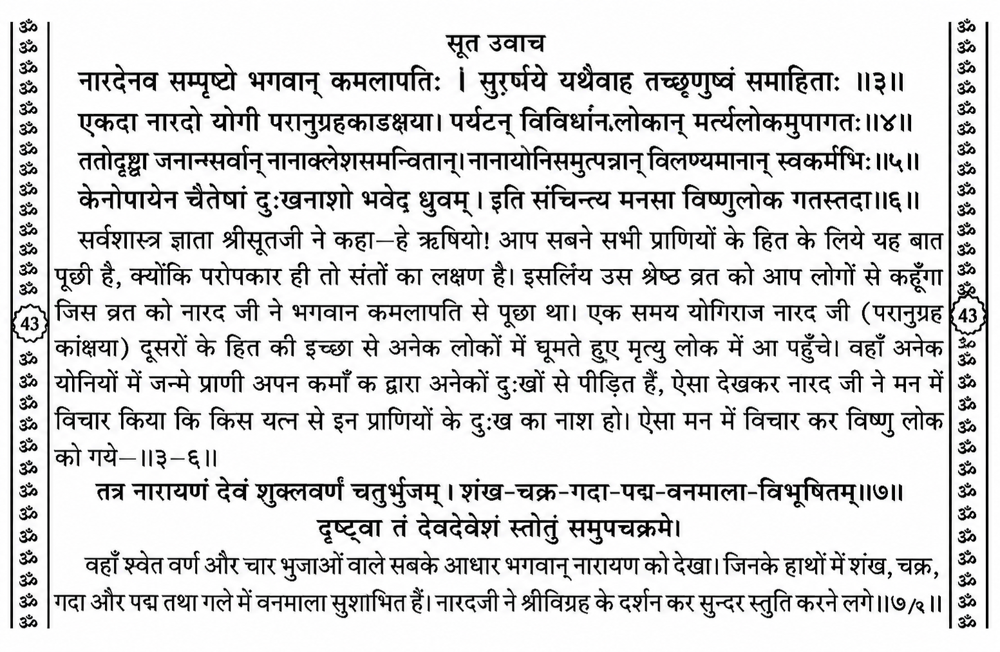
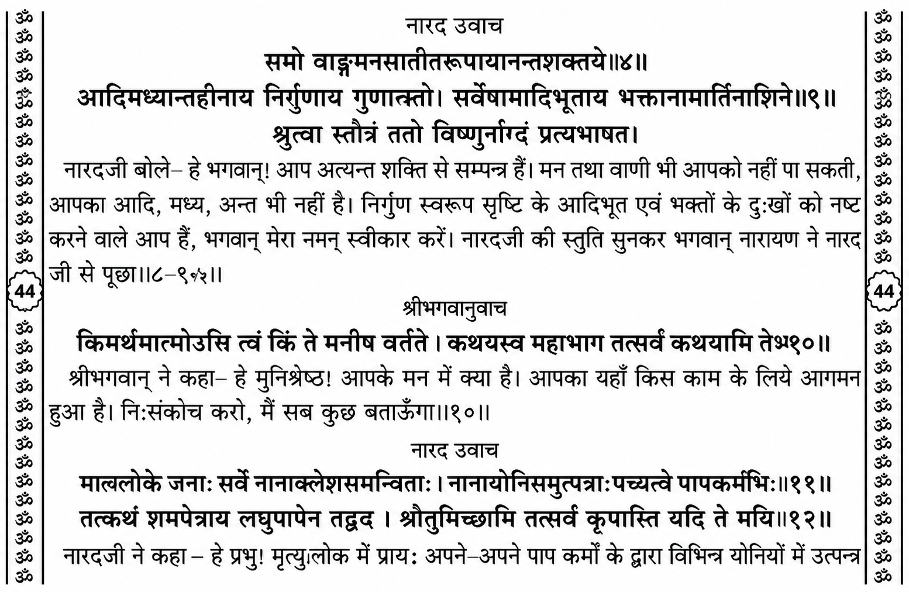
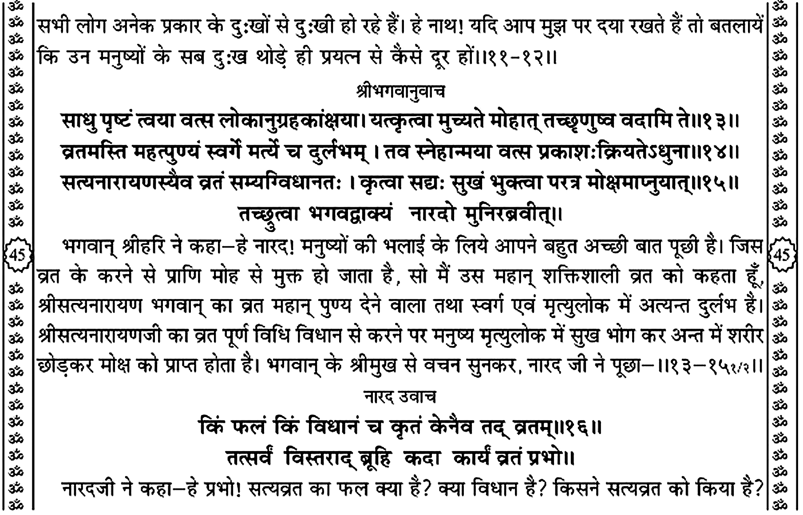
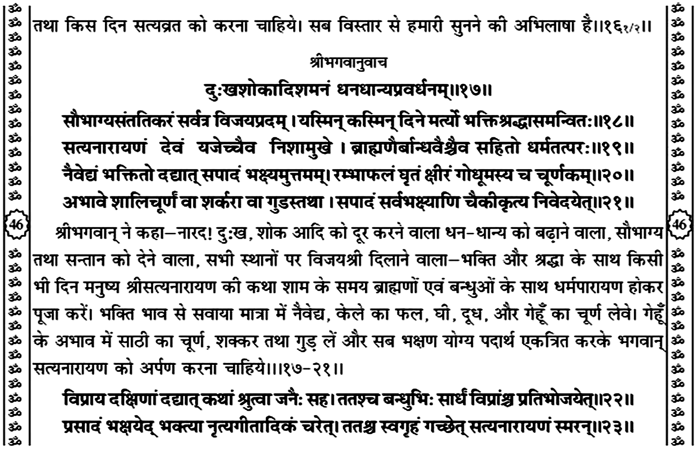
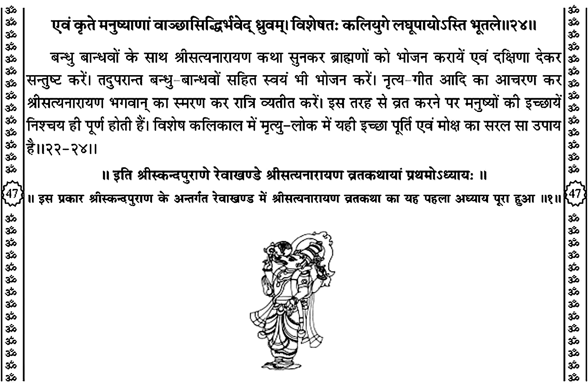
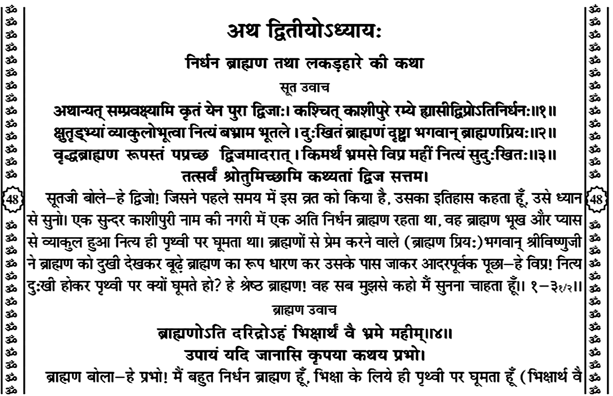
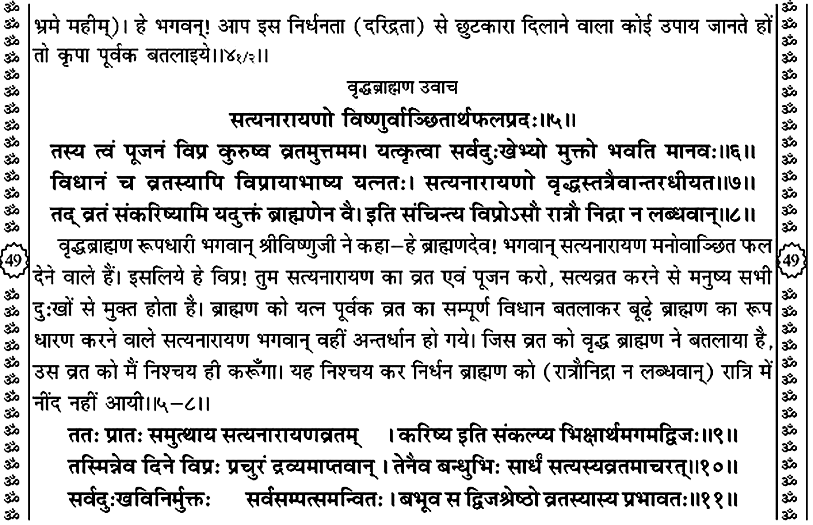
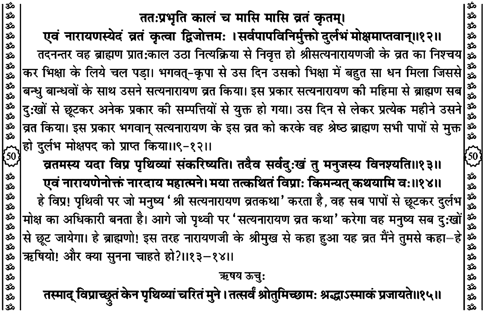
कथा अंत
8. हवन, आरती, क्षमापनं
हवन
पंच भूसंस्कार
परिसमूहन (कीट या कृमि हटाना), उपलेपन (गोबर से लेपन), उल्लेखन या रेखाकरण (रेखा खींचना), उद्धरण एवं अभ्युक्षण (जल से शुद्धिकरण)।
हवन सामग्री एवं समिधा की तैयारी
तील का आधा चावल और चावल का आधा जौ तथा जौ का आधा शर्करा एवं घी। कमल गट्टा, लोबान, पंचमेवा इत्यादि भी मिलाएँ।
अग्नि स्थापना
ॐ अग्निं दूतं पुरो दधे हव्यवाहमुप ब्रुवे। देवान् आ सादयादिह॥
अग्नि का ध्यान
हाथ में पुष्प लेकर:
ॐ सर्वतः पाणिपादश्च सर्वतोऽक्षिशिरोमुखः। विश्वरूपो महानग्निः प्राणितः सर्वकर्मसु॥
अग्निं प्रज्वलितं वन्दे जातवेदं हुताशनम्। सुवर्णवर्णममलं समिद्धं सर्वतोमुखम्॥
ब्रह्मा का वरण एवं हवन की तैयारी
- यज्ञ की रक्षा के लिए अग्नि की दाहिनी ओर संकल्प करके ब्रह्मा को स्थापित करें।
- ब्रह्मा वरण: ॐ भो ब्रह्मण! इह आगच्छ, इह तिष्ठ, मम एतद् यज्ञकर्म रक्ष-रक्ष, विहितं कुरु नमः॥ ॐ ब्रह्मणे नमः, आसनार्थे अक्षतान् समर्पयामि।
- प्रोक्षणी पात्र: आम्रपल्लव के पत्ते पर जल छिड़ककर शुद्धिकरण कर लें।
- घृत पात्र: घृत पात्र में घी डालकर अग्नि पर तीन बार गर्म करें—अर्थात् तीन बार अग्नि पर चढ़ाएँ और उतारें।
- श्रुवा: आम्रपल्लव के पत्ते से हवन के लिए एक श्रुवा बनाएँ।
घी से आहुति
- ॐ प्रजापतये स्वाहा। इदं प्रजापतये न मम।
- ॐ इन्द्राय स्वाहा। इदं इन्द्राय न मम।
- ॐ अग्नये स्वाहा। इदं अग्नये न मम।
- ॐ सोमाय स्वाहा। इदं सोमाय न मम।
- ॐ अग्नये स्विष्टकृते स्वाहा। इदमग्नये स्विष्टकृते न मम।
- ॐ भूः स्वाहा। इदमग्नये न मम।
- ॐ भुवः स्वाहा। इदं वायवे न मम।
- ॐ स्वः स्वाहा। इदं सूर्याय न मम।
- ॐ प्रजापतये स्वाहा। इदं प्रजापतये न मम।
हवन सामग्री से आहुति
- ॐ श्री गणेशाय स्वाहा, ॐ गौर्यै स्वाहा, ॐ सूर्याय स्वाहा, ॐ चन्द्रमसे स्वाहा, ॐ मंगलाय स्वाहा।
- ॐ बुधाय स्वाहा, ॐ बृहस्पतये स्वाहा, ॐ शुक्राय स्वाहा, ॐ शनये स्वाहा, ॐ राहवे स्वाहा, ॐ केतवे स्वाहा।
- ॐ वरुणाय स्वाहा, ॐ वास्तोष्पतये स्वाहा, ॐ पंचलोकपालदेवताभ्यः स्वाहा, ॐ क्षेत्राधिपतये स्वाहा।
- ॐ इन्द्रादिदशदिक्पालदेवताभ्यः स्वाहा, ॐ ग्रामदेवताभ्यः स्वाहा, ॐ कुलदेवताभ्यः स्वाहा, ॐ इष्टदेवताभ्यः स्वाहा।
- ॐ नमो भगवते वासुदेवाय स्वाहा — 8, 28 या 108 आहुति।
- सर्वमङ्गलमाङ्गल्ये शिवे सर्वार्थसाधिके। शरण्ये त्र्यम्बके गौरि नारायणि नमोऽस्तु ते॥ स्वाहा।
- रोगानशेषानपहंसि तुष्टा रुष्टा तु कामान् सकलानभीष्टान्। त्वामाश्रितानां न विपन्नराणां त्वामाश्रिता ह्याश्रयतां प्रयान्ति॥
- सर्वाबाधाविनिर्मुक्तो धनधान्यसुतान्वितः। मनुष्यो मत्प्रसादेन भविष्यति न संशयः॥ स्वाहा।
- ॐ भूर्भुवः स्वः तत्सवितुर्वरेण्यं भर्गो देवस्य धीमहि धियो यो नः प्रचोदयात्॥ स्वाहा।
- ॐ त्र्यम्बकं यजामहे सुगन्धिं पुष्टिवर्धनम्। उर्वारुकमिव बन्धनान् मृत्योर्मुक्षीय मामृतात्॥ स्वाहा।
नवग्रह लकड़ी से हवन
- सूर्य: ॐ ह्रां ह्रीं ह्रौं सः सूर्याय स्वाहा॥
- चन्द्र: ॐ श्रां श्रीं श्रौं सः चन्द्राय स्वाहा॥
- मङ्गल: ॐ क्रां क्रीं क्रौं सः भौमाय स्वाहा॥
- बुध: ॐ ब्रां ब्रीं ब्रौं सः बुधाय स्वाहा॥
- गुरु: ॐ ग्रां ग्रीं ग्रौं सः गुरवे स्वाहा॥
- शुक्र: ॐ द्रां द्रीं द्रौं सः शुक्राय स्वाहा॥
- शनि: ॐ प्रां प्रीं प्रौं सः शनैश्चराय स्वाहा॥
- राहु: ॐ भ्रां भ्रीं भ्रौं सः राहवे स्वाहा॥
- केतु: ॐ स्रां स्रीं स्रौं सः केतवे स्वाहा॥
- सर्व देव देवी: ॐ सर्वदेवीदेव्यै नमः स्वाहा॥
पूर्णाहुति
पान, सुपारी और शाकल्य के साथ:
ॐ पूर्णमदः पूर्णमिदं पूर्णात् पूर्णमुदच्यते। पूर्णस्य पूर्णमादाय पूर्णमेवावशिष्यते॥ स्वाहा।
घृत धारा समर्पित
ॐ वसोः पवित्रमसि शतधारं वसोः पवित्रमसि सहस्रधारम्। देवस्त्वा सविता पुनातु वसोः पवित्रेण शतधारेण सुप्वा कामधुक्षः स्वाहा॥
तर्पण
ॐ श्री सत्यनारायणाय तर्पयामि नमः॥ 11 बार।
मार्जन
ॐ श्री सत्यनारायणाय मार्जयामि नमः॥ 3 बार।
अग्नि प्रार्थना
- ॐ श्रद्धां मेधां यशः प्रज्ञां विद्यां पुष्टिं श्रियम् बलम्। तेज आयुष्यमारोग्यं देहि मे हव्यवाहन॥
- भो भो अग्ने महाशक्ते सर्वकर्मप्रसाधन। कर्मान्तरेऽपि सम्प्राप्ते सान्निध्यं कुरु सर्वदा॥
त्रायुष्करण
- ॐ त्र्यायुषं जमदग्ने — ललाट में भस्म लगाएँ।
- ॐ कश्यपस्य त्र्यायुषं — ग्रीवा में भस्म लगाएँ।
- ॐ यद्देवेषु त्र्यायुषं — दक्षिण कंधे पर भस्म लगाएँ।
- ॐ तन्नोऽस्तु त्र्यायुषं — हृदय में भस्म लगाएँ।
आरती
श्री सत्यनारायण भगवान की आरती
जय लक्ष्मीरमणा, श्री जय लक्ष्मीरमणा ।
सत्यनारायण स्वामी, जनपातक हरणा ॥ ॐ जय...
रत्न जडित सिंहासन, अद्भुत छवि राजे ।
नारद करत निराजन, घंटा ध्वनि बाजे ॥ ॐ जय...
प्रगट भये कलि कारण, द्विज को दरश दियो ।
बूढ़ो ब्राह्मण बनकर, कंचन महल कियो ॥ ॐ जय...
दुर्बल भील कठारो, इन पर कृपा करी ।
चंद्रचूड़ एक राजा, जिनकी विपति हरी ॥ ॐ जय...
वैश्य मनोरथ पायो, श्रद्धा तज दीनी ।
सो फल भोग्यो प्रभुजी, फिर स्तुति कीनी ॥ ॐ जय...
भाव भक्ति के कारण, छिन-छिन रूप धरयो ।
श्रद्धा धारण कीनी, तिनको काज सरयो ॥ ॐ जय...
ग्वाल बाल संग राजा, वन में भक्ति करी ॥
मनवांछित फल दीन्हो, दीनदयाल हरी ॥ ॐ जय...
चढ़त प्रसाद सवाया, कदली फल मेवा ॥
धूप दीप तुलसी से, राजी सत्यदेवा ॥ ॐ जय...
सत्यनारायण की आरती, जो कोई नर गावे ।
कहत शिवानंद स्वामी, वांछित फल पावे ॥ ॐ जय...
ॐ जय जगदीश हरे
ॐ जय जगदीश हरे, स्वामी जय जगदीश हरे।
भक्त जनों के संकट, दास जनों के संकट, क्षण में दूर करे॥
ॐ जय जगदीश हरे॥
जो ध्यावे फल पावे, दुःख बिनसे मन का।
स्वामी दुःख बिनसे मन का।
सुख संपत्ति घर आवे, कष्ट मिटे तन का॥
ॐ जय जगदीश हरे॥
मात-पिता तुम मेरे, शरण गहूँ मैं किसकी।
स्वामी शरण गहूँ मैं किसकी।
तुम बिन और न दूजा, प्रभु बिन और न दूजा, आस करूँ मैं जिसकी॥
ॐ जय जगदीश हरे॥
तुम पूर्ण परमात्मा, तुम अन्तर्यामी।
स्वामी तुम अन्तर्यामी।
पारब्रह्म परमेश्वर, पारब्रह्म परमेश्वर, तुम सबके स्वामी॥
ॐ जय जगदीश हरे॥
तुम करुणा के सागर, तुम पालनकर्ता।
स्वामी तुम पालनकर्ता।
मैं मूरख खल कामी, मैं मूरख खल कामी, कृपा करो भर्ता॥
ॐ जय जगदीश हरे॥
तुम हो एक अगोचर, सबके प्राणपति।
स्वामी सबके प्राणपति।
किस विधि मिलूँ दयामय, किस विधि मिलूँ दयामय, तुमको मैं कुमति॥
ॐ जय जगदीश हरे॥
दीनबंधु दुखहर्ता, ठाकुर तुम मेरे।
स्वामी रक्षक तुम मेरे।
अपने हाथ उठाओ, अपने हाथ उठाओ, द्वार पड़ा तेरे॥
ॐ जय जगदीश हरे॥
विषय-विकार मिटाओ, पाप हरो देवा।
स्वामी पाप हरो देवा।
श्रद्धा-भक्ति बढ़ाओ, श्रद्धा-भक्ति बढ़ाओ, सन्तन की सेवा॥
ॐ जय जगदीश हरे॥
तन-मन-धन सब जी का, सब कुछ है तेरा, स्वामी सब कुछ है तेरा।
तेरा तुझको अर्पण, क्या लागे मेरा॥ ॐ जय जगदीश हरे॥
श्री जगदीश जी की आरती, जो कोई नर गावे, स्वामी जो कोई नर गावे।
कहत शिवानन्द स्वामी, मनवांछित फल पावे॥ ॐ जय जगदीश हरे॥
ॐ कर्पूरगौरं करुणावतारं
कर्पूरगौरं करुणावतारं संसारसारं भुजगेन्द्रहारम्।
सदा वसन्तं हृदयारविन्दे भवं भवानीसहितं नमामि॥
मन्त्र पुष्पांजलि
ॐ यज्ञेन यज्ञमयजन्त देवास्तानि धर्माणि प्रथमान्यासन्।
ते ह नाकं महिमानः सचन्त यत्र पूर्वे साध्याः सन्ति देवाः॥
ॐ राजाधिराजाय प्रसह्य साहिने नमो वयं वैश्रवणाय कुर्महे।
स मे कामान् कामकामाय मह्यं कामेश्वरो वैश्रवणो दधातु।
कुबेराय वैश्रवणाय महाराजाय नमः॥
ॐ श्री सत्यनारायणाय नमः, मन्त्रपुष्पांजलिं समर्पयामि।
प्रदक्षिणा
यानि कानि च पापानि जन्मान्तरकृतानि च।
तानि सर्वाणि नश्यन्ति प्रदक्षिणपदे पदे॥
क्षमापनं
- यन्मया भक्तियोगेन पत्रं पुष्पं फलं जलम्। निवेदितं च नैवेद्यं तद्गृहाणानुकम्पया॥
- आवाहनं न जानामि न जानामि विसर्जनम्। पूजां चैव न जानामि क्षमस्व परमेश्वर॥
- मंत्रहीनं क्रियाहीनं भक्तिहीनं जनार्दन। यत्पूजितं मया देव परिपूर्णं तदस्तु मे॥
- यदक्षरपदभ्रष्टं मात्राहीनं तु यद्भवेत्। तत्सर्वं क्षम्यतां देव नारायण नमोऽस्तु ते॥
- पापोऽहं पापकर्माहं पापात्मा पापसम्भवः। त्राहि मां पार्वतीनाथ सर्वपापहरो हरः॥
- सर्वे भवन्तु सुखिनः सर्वे सन्तु निरामयाः। सर्वे भद्राणि पश्यन्तु मा कश्चिद्दुःखभाग् भवेत्॥
- त्वमेव माता च पिता त्वमेव, त्वमेव बन्धुश्च सखा त्वमेव।
- त्वमेव विद्या द्रविणं त्वमेव, त्वमेव सर्वं मम देव देव॥
- सेवा पूजा बंदगी, सभी आपके हाथ। मैं तो कछु जानूँ नहीं, आप ही जानो भोलेनाथ॥
- शिव के समान दाता नहीं, विपत्ति विदारणहार। लज्जा सबकी रखियो शिव, बैलन असवार॥
- सिंह चढ़ी दुर्गा मिले, गरुड़ चढ़े भगवान। बैल चढ़े बाबा मिले, पूरण हो सबका॥
- बाबा बाबा सब कहे, मैया कहे न कोई। बाबा के दरबार में, मैया करे सो होय॥
- दाता के दरबार में खड़े सभी कर जोड़। देने वाला एक है, मांगत लाख करोड़॥
- प्रेम से बोलिए सत्यनारायण भगवान की — जय।
- सच्चे दरबार की — जय।
- धर्म की जय हो, अधर्म का नाश हो, प्राणियों में सद्भावना हो, विश्व का कल्याण हो।
- हर हर हर महादेव।
विसर्जन
- ॐ यान्तु देवगणाः सर्वे स्वशक्त्या पूजिता मया। इष्टकामप्रसिद्ध्यर्थं पुनरागमनाय च॥
- ॐ उत्तिष्ठ ब्रह्मणस्पते देवयन्तस्त्वेमहे। उप प्रयन्तु मरुतः सुदानव इन्द्र प्राशूर्भवा सचा॥
- ॐ गच्छ गच्छ सुरश्रेष्ठ स्वस्थाने परमेश्वर। यत्र ब्रह्मादयो देवास्तत्र गच्छ हुताशन॥
- ॐ गच्छ गच्छ गृहं गच्छ स्वस्थानं परमेश्वरः। पूजाभ्यर्चनकाले तु पुनराय गमनाय च॥
ब्राह्मण दक्षिणा
- ॐ उपायनमिदं तुभ्यं व्रतसम्पूर्तिहेतवे। वायनं द्विजवर्याय सहिरण्यं ददाम्यहम्॥
- ॐ अद्य कृतैतत्सङ्गहोमकर्मणि सत्यनारायणपूजनतत्कथाश्रवणकर्मप्रतिष्ठार्थम् एतद् द्रव्यमूल्यकं हिरण्यमग्निदैवतं यथानामगोत्राय ब्राह्मणाय दक्षिणामहं सम्प्रददे।
चरणामृत मंत्र
अकालमृत्युहरणं सर्वव्याधिविनाशनम्।
विष्णुपादोदकं पीत्वा पुनर्जन्म न विद्यते॥
रक्षासूत्र
येन बद्धो बली राजा दानवेन्द्रो महाबलः। तेन त्वामनुबध्नामि रक्षे मा चल मा चल॥
शान्ति जल मंत्र
ॐ द्यौः शान्तिरन्तरिक्षं शान्तिः, पृथिवी शान्तिरापः शान्तिरोषधयः शान्तिः। वनस्पतयः शान्तिर्विश्वे देवाः शान्तिर्ब्रह्म शान्तिः, सर्वं शान्तिः, शान्तिरेव शान्तिः, सा मा शान्तिरेधि॥ ॐ शान्तिः शान्तिः शान्तिः॥
आशीर्वाद मंत्र
सर्वबाधाविनिर्मुक्तो धनधान्यसुतान्वितः। मनुष्यो मत्प्रसादेन भविष्यति न संशयः॥
ॐ स्वस्ति न इन्द्रो वृद्धश्रवाः स्वस्ति नः पूषा विश्ववेदाः। स्वस्ति नस्तार्क्ष्यो अरिष्टनेमिः स्वस्ति नो बृहस्पतिर्दधातु॥
9. स्रोत एवं परंपरा
पाठ / ग्रंथ / पद्यविधि: सत्यापन करना है
संस्करण, प्रकाशक या URL: जोड़ा जाना है
उपयुक्त अध्याय / खंड / पृष्ठ: जोड़ा जाना है
समीक्षा स्थिति: अभी तक सत्यापित नहीं
For complex rites or where local tradition differs, consult a qualified priest familiar with the relevant sampradaya.